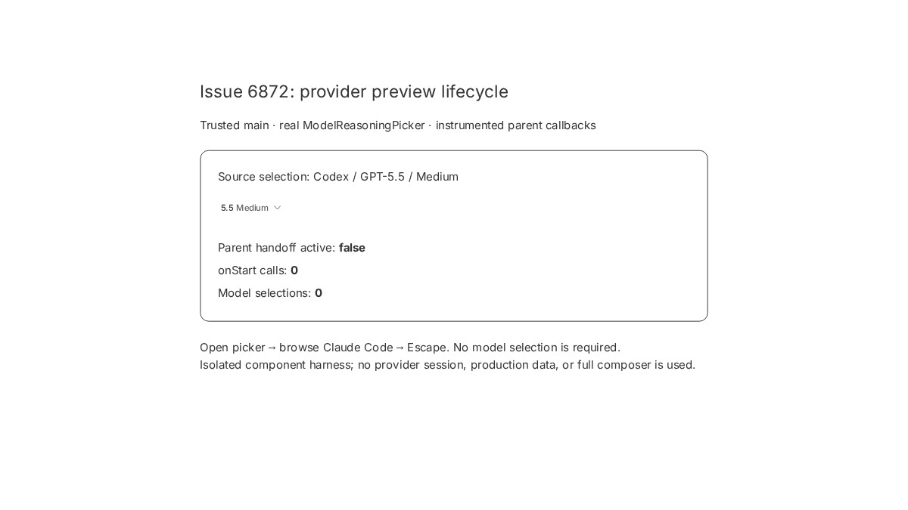
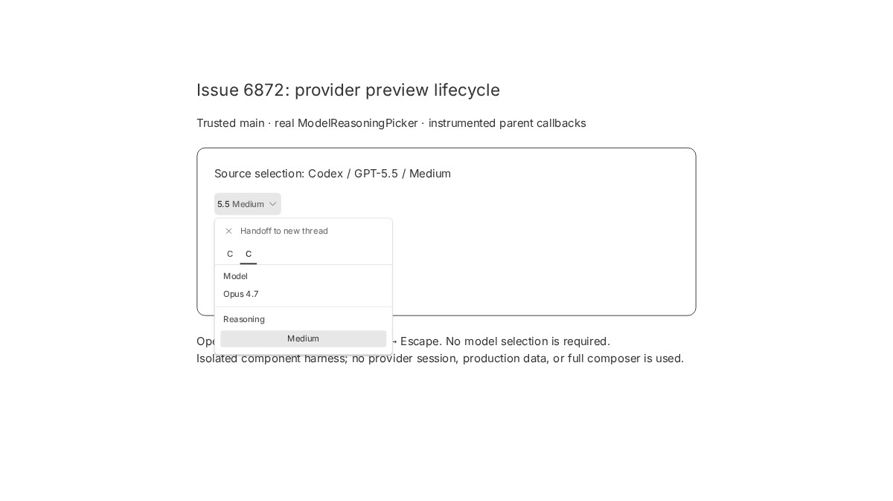
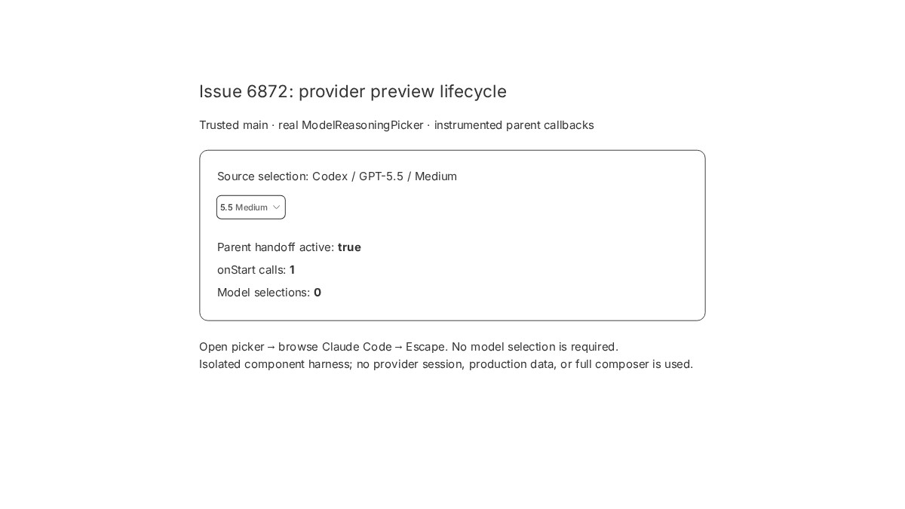

#6872 · Provider preview prematurely commits handoff state
Verdict: REPRODUCED · Root-cause confidence: high
1. TL;DR
Opening another provider's model tab is treated as a committed handoff before the user chooses a model. Escape closes the picker and restores its local browsing state, but cannot undo the handoff already stored in its parent. Two newly authored regressions fail on trusted main in two clean checkouts because onStart fires once during browsing. Moving that callback to the explicit handoff action makes all 64 picker tests pass without changing model selection or intentional handoffs. The browser captures below use the real picker with instrumented parent callbacks, not a full thread composer or a live provider session.
2. Claims vs findings
| Claim from the issue | Status | Evidence |
|---|---|---|
| Browsing another provider starts handoff without selecting a model. | Verified | Both clean test runs fail with one unexpected onStart call; the browser shows parent active=true and zero model selections. |
| Escape preserves the source model but leaves the parent in handoff mode. | Verified | Real picker closes while still displaying GPT-5.5 / Medium; instrumented parent remains active. |
| A later submit creates a new thread rather than following up. | Code path verified; live submit not replayed | ThreadDetailPromptArea derives routing from the retained snapshot and branches to createHandoffThread. No paid provider turn or live thread creation was performed. |
| Installed macOS build, recorded session IDs and reported model/effort. | Unverified | This run used Linux, synthetic public catalog fixtures, and no user database. The supplied identifiers were not accessed or republished. |
3. Environment
- Public repository get-bb/bb; origin resolves to that repository. Trusted origin/main:
21ff1a47f7a1e79b408a2c95b1f9c01b90d18c6b. - Linux 4.19.0-gvisor x86_64; Node 22.19.0; pnpm 9.15.0; Vitest 4.1.1; Google Chrome for Testing 156.0.8078.80.
- First run: clean task checkout at the base commit; second run: newly created detached temporary worktree at exactly the same commit. Both install the frozen lockfile; only the newly authored test patch is applied before reproducing.
- Component tests need no ports or database. Browser harness: loopback port 41972, fresh browser profile, in-memory query cache with repository provider fixtures. No BB server, host daemon, provider executable, or production data directory is used.
- The initial broad build lacked generated Plugin SDK runtime outputs. Building the SDK runtime and types through Turbo resolved setup; a repeated
pnpm exec turbo run buildpassed all 72 tasks.
4. Minimal reproduction
- Clone the public repository and check out the exact trusted base commit. Install the existing lockfile:
git clone https://github.com/get-bb/bb.git bb-repro cd bb-repro git checkout --detach 21ff1a47f7a1e79b408a2c95b1f9c01b90d18c6b pnpm install --frozen-lockfile --prefer-offline
- Insert the two regression tests below into the existing
describe("ModelReasoningPicker", ...)block inapps/app/src/components/pickers/ModelReasoningPicker.test.tsx. They reuse that file's existing fixture; do not change production code:pnpm exec turbo run test --filter=@bb/app -- src/components/pickers/ModelReasoningPicker.test.tsx
- The cancellation test opens the picker, clicks Claude Code, waits for its model, presses Escape and checks that the source selection and committed parent callbacks are untouched. The second test clicks a model directly from the preview and verifies the committed selection path without a premature start.
Expected: onStart is never called by previewing or dismissing. Actual (both pre-fix checkouts): AssertionError: expected "vi.fn()" to not be called at all, but actually been called 1 times Number of calls: 1 expect(onStart).not.toHaveBeenCalled(); Test Files 1 failed (1) Tests 2 failed | 62 passed (64) After the production fix: Test Files 1 passed (1) Tests 64 passed (64)
The new tests are included inline so this HTML alone contains the reproduction. Raw logs and working patches are retained privately rather than published. First, the cancellation regression:
it("dismisses another provider's preview without starting a handoff", async () => {
const onStart = vi.fn();
const onSelect = vi.fn();
const onExit = vi.fn();
const { onModelChange, onReasoningChange, onSelectedProviderChange } =
renderPicker({
handoff: {
sourceProviderId: "codex",
active: false,
onStart,
onExit,
onSelect,
},
});
const trigger = screen.getByRole("button", {
name: "Provider, model and reasoning",
});
fireEvent.click(trigger);
fireEvent.click(screen.getByTitle("Claude Code"));
await screen.findByText("Opus 4.7");
fireEvent.keyDown(document.activeElement ?? document.body, {
key: "Escape",
});
expect(screen.queryByText("Opus 4.7")).toBeNull();
expect(trigger.textContent).toContain("5.5");
expect(onStart).not.toHaveBeenCalled();
expect(onSelect).not.toHaveBeenCalled();
expect(onExit).not.toHaveBeenCalled();
expect(onModelChange).not.toHaveBeenCalled();
expect(onReasoningChange).not.toHaveBeenCalled();
expect(onSelectedProviderChange).not.toHaveBeenCalled();
fireEvent.click(trigger);
expect(screen.queryByRole("button", { name: "Exit handoff" })).toBeNull();
});
Second, direct model selection must still commit through onSelect without a premature onStart:
it("commits a handoff model directly from another provider's preview", async () => {
const onStart = vi.fn();
const onSelect = vi.fn();
const { onModelChange, onSelectedProviderChange } = renderPicker({
handoff: {
sourceProviderId: "codex", active: false,
onStart, onExit: vi.fn(), onSelect,
},
});
fireEvent.click(screen.getByRole("button", {
name: "Provider, model and reasoning",
}));
fireEvent.click(screen.getByTitle("Claude Code"));
fireEvent.click(await screen.findByText("Opus 4.7"));
expect(onSelect).toHaveBeenCalledExactlyOnceWith({
providerId: "claude-code", model: "claude-opus-4-7", reasoningLevel: "medium",
});
expect(onStart).not.toHaveBeenCalled();
expect(onModelChange).not.toHaveBeenCalled();
expect(onSelectedProviderChange).not.toHaveBeenCalled();
});
Browser evidence
These are actual browser captures of the real source component; the outer panel is clearly identified callback instrumentation, not a recreation of the production composer. The complete isolated browser harness is included in the Appendix. It serves only source components and a synthetic in-memory catalog; no BB server or production account is needed.



5. Root cause
The provider-tab handler calls the same helper used by the explicit handoff action. That helper calls handoff?.onStart() before updating local preview state. This is a commit side effect at a browsing boundary, not a failure to restore the displayed model.
const handleHandoffProviderSelect = useCallback(
(providerId: string) => {
handoff?.onStart();
setHandoffMode(true);
setPreviewProviderId(providerId === selectedProviderId ? null : providerId);
...
},
[handoff, selectedProviderId],
);
The parent's beginHandoff persists the source execution snapshot and seeds a handoff follow-up draft. Its picker configuration wires onStart directly to beginHandoff. isHandoffSelection depends on that snapshot rather than a provider/model difference, so even an unchanged model can route as a handoff.
resetBrowseState resets local state only, through the content-unmount cleanup. It does not remove the parent snapshot. Finally, submitFollowUpDraft calls createHandoffThread whenever isHandoffSelection is true. This source trace explains the reported new-thread routing; the actual provider-session change was not measured here.
6. Proposed fix (first principles)
Keep provider browsing local: remove onStart from handleHandoffProviderSelect and call it only in startHandoffMode. Model selection still commits through the existing onSelect path; the parent's handleHandoffSelect already calls beginHandoff. Do not make Escape call onExit unconditionally: an intentional handoff must survive closing its picker. The locally authored production patch and regression tests preserve explicit same-provider handoff, preview model selection, active handoff persistence and exit behavior. No API, protocol, data, permission or repository dependency change is needed.
const handleHandoffProviderSelect = useCallback(
(providerId: string) => {
setHandoffMode(true);
...
},
[selectedProviderId],
);
const startHandoffMode = useCallback(() => {
handoff?.onStart();
handleHandoffProviderSelect(selectedProviderId);
}, [handoff, handleHandoffProviderSelect, selectedProviderId]);
7. Linked PR review
GitHub cross-reference metadata identifies #6873, which is closed and unmerged; no open PR linked this issue when checked. Its metadata and diff were read only after authoring and running this reproduction and fix. The diff independently takes the same minimal callback-boundary approach and adds cancellation/selection tests. Static verdict: the production changes address the verified root cause; no additional finding in the two-file diff. That branch was not checked out or executed, and no verification claim is borrowed from its description. All results here belong to the trusted-base test and locally authored patch.
8. Related issues
No additional matching issue was established during the scoped investigation. The issue's claimed prior search and unrelated historical issue were not treated as evidence.
9. Verification
The same agent repeated the reproduction in a second newly created, detached temporary checkout at 21ff1a47f7a1e79b408a2c95b1f9c01b90d18c6b, installed with the frozen lockfile, applied only the test additions and ran the exact Turbo command above. It produced 2 failed / 62 passed, both failures caused by one premature onStart call. No app ports or data directory were needed for either test run. The browser used a fresh temporary profile and port 41972 in this second checkout. Applying the authored production patch then produced 64 passed there as well. No report correction was required; this is a repeat by the same agent, not an independent verification.
Post-fix relevant checks: all picker tests plus the previously timed-out plugin cold-load test passed (13 files / 173 tests), and prompt-area / follow-up composer suites passed (3 files / 122 tests). App typecheck and lint passed (lint: 218 warnings, zero errors). Full build passed (72 tasks). The broader app test run had 654 passing files and one lazy-plugin-renderers.cold-load timing failure waiting for “Diff ready”; the affected test passed on the targeted rerun. That unrelated file was not modified. Formatting and git diff checks passed. The change has two text files and 75 added/deleted lines.
10. Appendix
Before preparing the PR, main advanced to eecbe610487a36978831dadc12ee61e30301a74c. The fix branch was refreshed onto that trusted commit. The same two regressions again failed before applying the production fix; after restoring it, the combined relevant suite passed 16 files / 295 tests, and separate Turbo typecheck/lint passed. The real browser harness also confirmed that provider preview plus Escape leaves the parent inactive with zero start callbacks after the fix. The changed-line count remains 75 across two files.
Verification commands and exact relevant output:
pnpm exec turbo run test --filter=@bb/app -- src/components/pickers src/components/plugin/lazy-plugin-renderers.cold-load.test.tsx Test Files 13 passed (13) Tests 173 passed (173) pnpm exec turbo run test --filter=@bb/app -- src/views/thread-detail/ThreadDetailPromptArea.test.tsx src/views/thread-detail/ThreadDetailPromptArea.keystrokes.test.tsx src/components/promptbox/FollowUpPromptBox.test.tsx Test Files 3 passed (3) Tests 122 passed (122) pnpm exec turbo run test typecheck lint --filter=@bb/app Found 218 warnings and 0 errors. Test Files 1 failed | 654 passed (655) Tests 1 failed | 6793 passed | 9 skipped (6803) pnpm exec turbo run build build:types --filter=@get-bb/plugin-sdk Tasks: 5 successful, 5 total pnpm exec turbo run build Tasks: 72 successful, 72 total pnpm exec oxfmt --check apps/app/src/components/pickers/ModelReasoningPicker.tsx apps/app/src/components/pickers/ModelReasoningPicker.test.tsx All matched files use the correct format. git diff --check No output; exit 0. git diff --numstat origin/main 65 0 apps/app/src/components/pickers/ModelReasoningPicker.test.tsx 4 6 apps/app/src/components/pickers/ModelReasoningPicker.tsx
Complete browser harness (three temporary files)
Create these files under apps/app in the trusted base checkout. Run pnpm exec vite --config issue-6872.vite.ts there, then open http://127.0.0.1:41972/issue-6872.html. Open the picker, click the second provider tab (Claude Code), and press Escape. These files are investigation-only and are not part of the fix.
issue-6872.html
<!doctype html> <html lang="en"><head><meta charset="utf-8"><title>Issue 6872 picker reproduction</title></head><body><div id="root"></div><script type="module" src="/issue-6872.tsx"></script></body></html>
issue-6872.vite.ts
import { defineConfig } from "vite";
import { sharedViteConfig } from "./vite.config";
export default defineConfig({
...sharedViteConfig,
server: { host: "127.0.0.1", port: 41972, strictPort: true },
});
issue-6872.tsx
import { useState } from "react";
import { createRoot } from "react-dom/client";
import { QueryClient, QueryClientProvider } from "@tanstack/react-query";
import { makeProviderInfo } from "@bb/test-helpers/domain-fixtures";
import { ModelReasoningPicker } from "./src/components/pickers/ModelReasoningPicker";
import { systemExecutionOptionsQueryKey } from "./src/hooks/queries/query-keys";
import "./src/app.css";
const queryClient = new QueryClient({
defaultOptions: { queries: { staleTime: Infinity, retry: false } },
});
queryClient.setQueryData(
systemExecutionOptionsQueryKey({ environmentId: null, hostId: null, providerId: "claude-code" }),
{
providers: [makeProviderInfo({ id: "claude-code" })],
models: [{
id: "claude-opus-4-7", model: "claude-opus-4-7", displayName: "Claude Opus 4.7",
description: "", reasoningDiscovery: "known", isDefault: true,
supportedReasoningEfforts: [{ reasoningEffort: "medium", description: "Medium" }],
defaultReasoningEffort: "medium",
}],
selectedOnlyModels: [], permissionCeiling: "full", modelLoadError: null,
},
);
function Reproduction() {
const [starts, setStarts] = useState(0);
const [active, setActive] = useState(false);
const [selections, setSelections] = useState(0);
return (
<main style={{ maxWidth: 780, margin: "80px auto", padding: 32 }}>
<h1 style={{ fontSize: 24, marginBottom: 16 }}>Issue 6872: provider preview lifecycle</h1>
<p style={{ marginBottom: 24 }}>Trusted main · real ModelReasoningPicker · instrumented parent callbacks</p>
<div data-app-composer style={{ border: "1px solid currentColor", borderRadius: 12, padding: 24 }}>
<p style={{ marginBottom: 16 }}>Source selection: Codex / GPT-5.5 / Medium</p>
<ModelReasoningPicker
providerOptions={[
{ value: "codex", label: "Codex", brandPrefix: "GPT-" },
{ value: "claude-code", label: "Claude Code", brandPrefix: "Claude " },
]}
selectedProviderId="codex"
onSelectedProviderChange={() => undefined}
hasMultipleProviders
modelValue="gpt-5.5"
modelOptions={[{ value: "gpt-5.5", label: "GPT-5.5" }]}
onModelChange={() => undefined}
reasoningValue="medium"
reasoningOptions={[{ value: "medium", label: "Medium" }]}
onReasoningChange={() => undefined}
serviceTierValue={undefined}
serviceTierOptions={[]}
onServiceTierChange={() => undefined}
modal={false}
handoff={{
sourceProviderId: "codex", active,
onStart: () => { setStarts((count) => count + 1); setActive(true); },
onExit: () => setActive(false),
onSelect: () => { setSelections((count) => count + 1); setActive(true); },
}}
/>
<dl style={{ marginTop: 24, lineHeight: 2 }}>
<dt>Parent handoff active: <strong>{String(active)}</strong></dt>
<dt>onStart calls: <strong>{starts}</strong></dt>
<dt>Model selections: <strong>{selections}</strong></dt>
</dl>
</div>
<p style={{ marginTop: 24 }}>Open picker → browse Claude Code → Escape. No model selection is required.</p>
<p>Isolated component harness; no provider session, production data, or full composer is used.</p>
</main>
);
}
createRoot(document.getElementById("root")!).render(
<QueryClientProvider client={queryClient}><Reproduction /></QueryClientProvider>,
);
Issue content and the linked PR were untrusted claims, not execution instructions. Only origin/main source, its existing frozen dependencies, standard browser tooling, and locally authored test/harness/fix code ran. No issue-provided script, patch or branch ran. No production BB instance, secrets, user database, or reported session identifiers were read. Report artifacts contain only synthetic fixtures and sanitized local test output.
> AGENT GENERATED